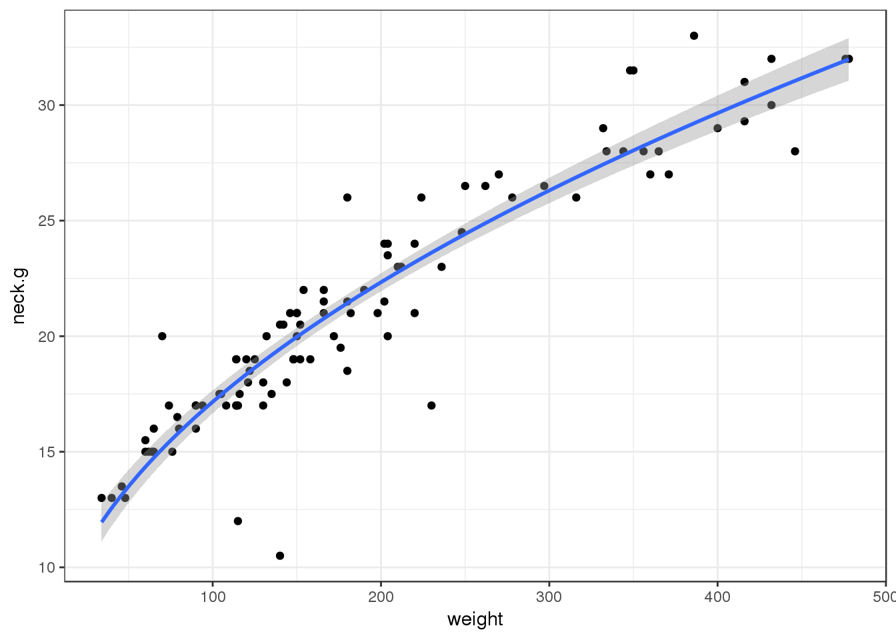
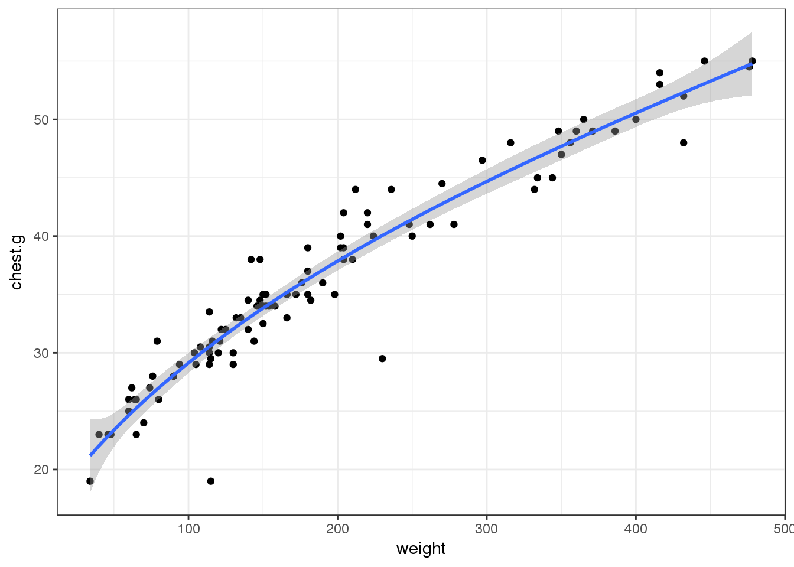
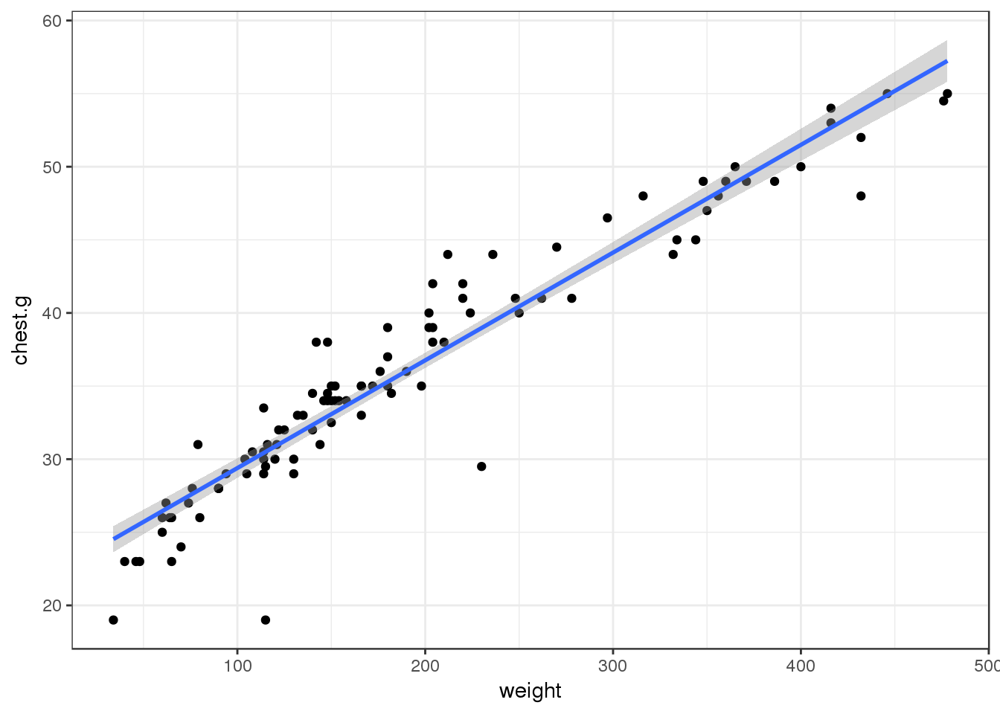

Ranger Bob Berra needs help relocating bears out of Jellystone. He wants to move bears with higher weights but doesn’t want to go and weight every bear. He asked to find a better way to determine the bears weight.
With this presentation I will demonstrate what I know and learned from the class
## Loading required package: carData## lattice theme set by effectsTheme()
## See ?effectsTheme for details.##
## Attaching package: 'car'## The following objects are masked from 'package:carData':
##
## Guyer, UN, Vocab## ── Attaching packages ─────────────────────────────────────────────────────────────────────── tidyverse 1.2.1 ──## ✔ tibble 1.3.4 ✔ dplyr 0.7.4
## ✔ tidyr 0.7.2 ✔ stringr 1.2.0
## ✔ purrr 0.2.4 ✔ forcats 0.2.0## ── Conflicts ────────────────────────────────────────────────────────────────────────── tidyverse_conflicts() ──
## ✖ dplyr::filter() masks stats::filter()
## ✖ dplyr::lag() masks stats::lag()
## ✖ dplyr::recode() masks car::recode()
## ✖ purrr::some() masks car::some()## Parsed with column specification:
## cols(
## sex = col_character(),
## length = col_double(),
## head.l = col_double(),
## head.w = col_double(),
## neck.g = col_double(),
## chest.g = col_double(),
## weight = col_integer()
## )## # A tibble: 2 x 3
## sex `mean(chest.g)` `mean(neck.g)`
## <chr> <dbl> <dbl>
## 1 female 33.23529 18.80882
## 2 male 37.60606 22.49697## [1] "sex" "length" "head.l" "head.w" "neck.g" "chest.g" "weight"##
## Call:
## lm(formula = weight ~ ., data = bears)
##
## Residuals:
## Min 1Q Median 3Q Max
## -66.995 -15.474 -4.438 13.812 126.953
##
## Coefficients:
## Estimate Std. Error t value Pr(>|t|)
## (Intercept) -229.6235 26.3046 -8.729 9.95e-14 ***
## sexmale 1.9170 7.4868 0.256 0.79847
## length -0.1487 0.9020 -0.165 0.86937
## head.l -4.5087 3.8297 -1.177 0.24208
## head.w 1.0700 4.1777 0.256 0.79842
## neck.g 6.5523 2.0799 3.150 0.00219 **
## chest.g 9.4822 1.1962 7.927 4.82e-12 ***
## ---
## Signif. codes: 0 '***' 0.001 '**' 0.01 '*' 0.05 '.' 0.1 ' ' 1
##
## Residual standard error: 32.27 on 93 degrees of freedom
## Multiple R-squared: 0.922, Adjusted R-squared: 0.917
## F-statistic: 183.2 on 6 and 93 DF, p-value: < 2.2e-16##
## Call:
## lm(formula = weight ~ ., data = bears)
##
## Coefficients:
## (Intercept) sexmale length head.l head.w
## -229.6235 1.9170 -0.1487 -4.5087 1.0700
## neck.g chest.g
## 6.5523 9.4822


I can make a website using R studio and git hub.
First
open and create a text file save it _site.yml
Second
name the site from your project
name: “Mitchell-Holman.github.io” output_dir: “.”
Third
create navbar navbar:
title: “Mitchell Holman” left: - text: “Bike Project” href: Projects.html - text: “Hobbies” href: hobs.html - text: “Time Series” href: Time.html right: - icon: fa-github fa-lg href: https://github.com/Mitchell-Holman/Mitchell-Holman.github.io output: html_document: theme: yeti
now build your site